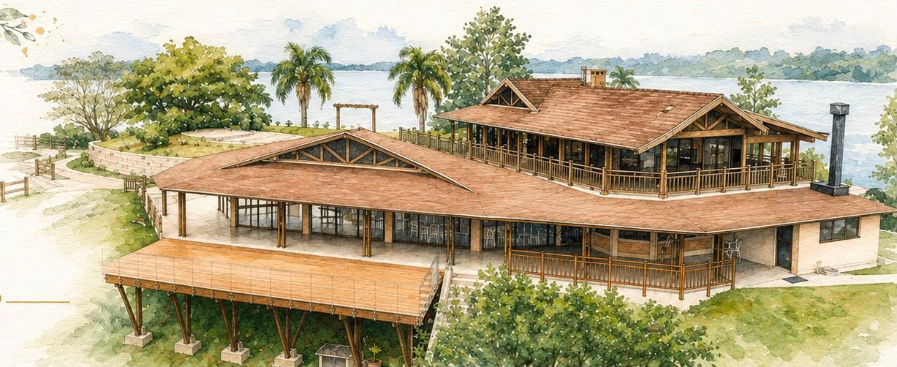

Depois de tantas histórias, escrevemos juntos o próximo capítulo. Venha celebrar esse dia com a gente.
↓ Conheça nossa história“Tudo tem o seu tempo determinado, e há tempo para todo propósito debaixo do céu.” Eclesiastes 3:1 Há um tempo certo para todas as coisas, e hoje entendemos que Deus, em Sua perfeita vontade, nos apresentou no tempo certo. Bastaram algumas conversas para percebermos que havia algo diferente. Era o momento certo e, de alguma forma, sabíamos que havíamos encontrado a pessoa certa. Buscamos em oração, colocamos nossos sentimentos diante de Deus e Ele nos deu a confirmação: era para ser. Desde então, seguimos juntos com a certeza de que a mão de Deus esteve presente em cada detalhe da nossa história. Em cada encontro, cada decisão, cada desafio e cada conquista, Ele foi escrevendo a nossa história com cuidado e propósito. Hoje, vivemos o início de um novo capítulo: o nosso casamento. E não poderíamos celebrar esse momento sem compartilhar essa alegria com pessoas que fizeram parte da nossa caminhada, que estiveram ao nosso lado e que, de alguma forma, também fazem parte da nossa história. “Grandes coisas fez o Senhor por nós, por isso estamos alegres.” Salmos 126:3 Com o coração cheio de gratidão, celebramos não apenas o amor que nos uniu, mas a fidelidade de Deus que nos trouxe até aqui. Este é apenas o começo do que Ele ainda fará em nós e através de nós.
As informações principais para você não perder nadinha.
Chegue com um tempinho de sobra para se acomodar antes da cerimônia.
No deck da Laggus, à beira do lago.
Welcome drink e música ambiente.
Menu servido à mesa - sem opção vegetariana.
Valsa dos noivos
Obrigado por celebrar esse dia com a gente.

Rua Sílvio Dallagrana, 8000 — Campo Largo, PR
Às margens da Represa do Passaúna, a cerca de 15 minutos de Curitiba.
A Laggus tem estacionamento próprio e gratuito para os convidados.
A própria Laggus oferece casas para hospedagem no local, com capacidade para até 37 pessoas — pergunte para a gente se precisar de indicação.
Não teremos transporte fretado. Recomendamos vir de carro ou combinar carona com outros convidados.
Esporte fino / cocktail. Capriche, mas sem desconforto — a festa vai até tarde!
Pedimos, por favor, que não usem branco.
Sua presença já é o nosso maior presente — mas se quiser nos ajudar a começar essa nova fase, escolha um item abaixo e reserve para você.
Dúvidas ou só quer mandar um carinho antecipado? Chama a gente: